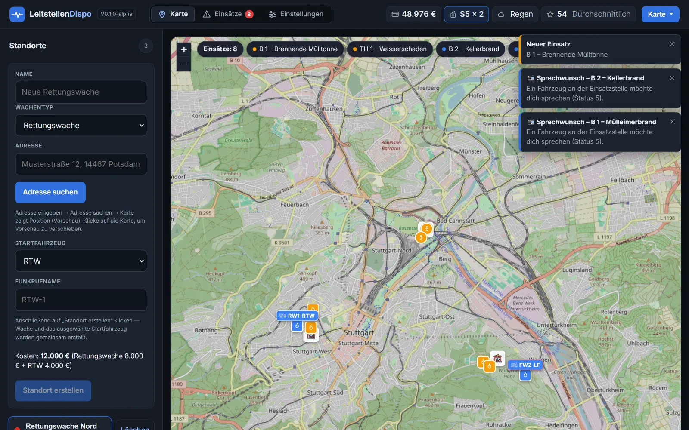
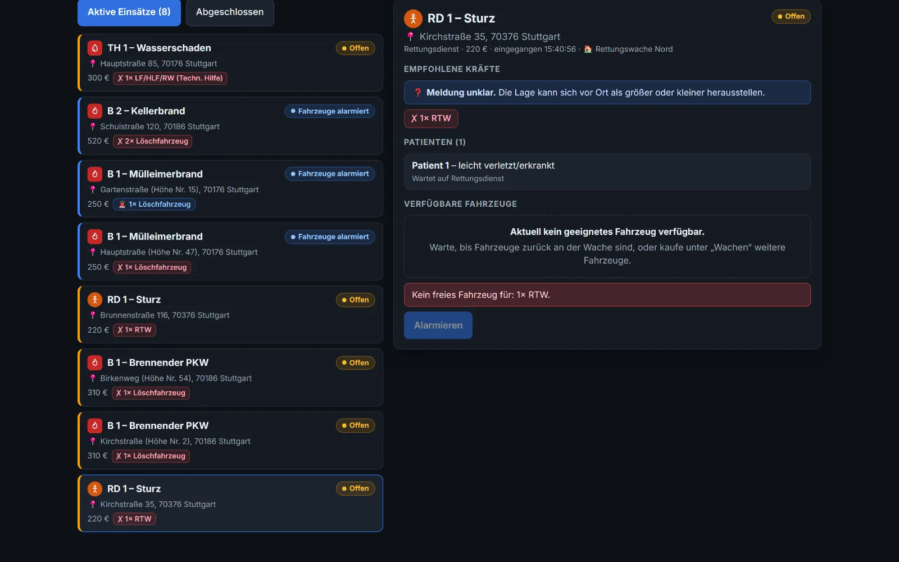
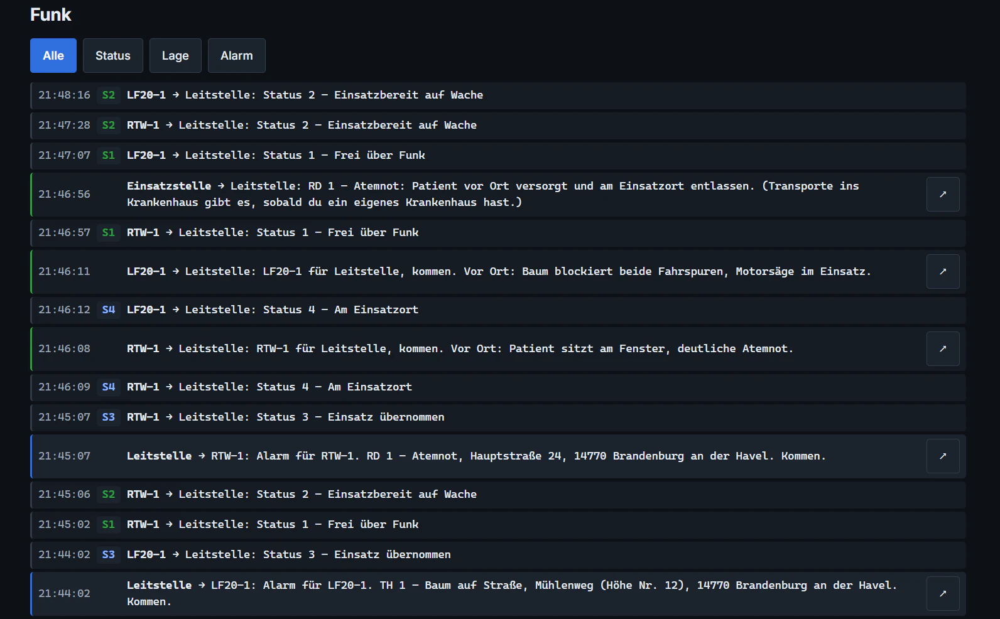

Deine Leitstelle.
Deine Entscheidungen.
Der Notruf geht ein, jede Sekunde zählt – und du entscheidest, wer fährt. Übernimm deine eigene Leitstelle: Alarmiere Rettungsdienst und Feuerwehr, behalte Funk und Fahrzeuge im Blick und bau Wache für Wache dein Netz auf, irgendwo in Deutschland. Kostenlos im Browser, am PC, Tablet und Handy.
Kostenlos · ohne Download · Konto in 30 Sekunden oder als Gast reinschnuppern · Discord-Community →
So sieht deine Leitstelle aus.



So startest du.
Konto anlegen, erste Wache bauen und los geht's: Notrufe kommen rein, du schickst die richtigen Fahrzeuge. Dein Spielstand wird in deinem Konto gespeichert – spiel weiter, wo du willst.
- 1Konto anlegenE-Mail, Name, Passwort – fertig.
- 2Erste Wache bauenIrgendwo in Deutschland, wo du willst.
- 3Notrufe abarbeitenDie Tour zeigt dir alles Schritt für Schritt.
- 🚑 Rettungsdienst & 🚒 Feuerwehr
- 🏥 Wachen, Personal & Ausbildung
- 📻 Funk mit FMS-Status
- ⭐ Ruf & Leistungsbonus
Alpha: Es kann noch ruckeln – dein Feedback hilft uns sehr.
🎖️ Gründungs-Spieler: Wer schon in der Alpha dabei ist, bekommt ein eigenes Abzeichen und wird in den Credits genannt.
Alles im Blick.
Einsätze, Fahrzeuge und deine Infrastruktur – übersichtlich an einem Ort.
Alles rund ums Spiel.
Was du schon spielen kannst, woran wir gerade arbeiten und wo du andere Disponentinnen und Disponenten triffst.
Funktionen
Einsätze, Fuhrpark, Wachen, Personal und Funk – alles, was du im Spiel schon erleben kannst.
Funktionen ansehen →Entwicklung
LeitstellenDispo wächst mit jedem Update. Sieh dir an, was schon spielbar ist und was als Nächstes kommt.
Entwicklung ansehen →Community
Tausch dich aus, melde Fehler aus der Alpha und erfahre als Erstes von neuen Updates.
Discord beitreten →